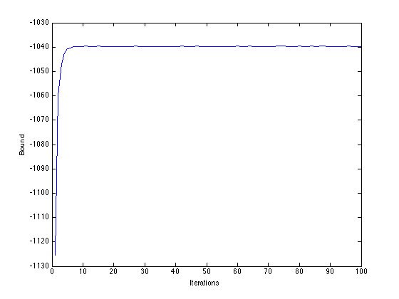
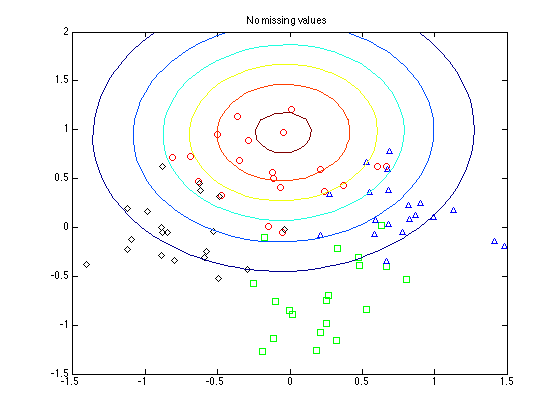
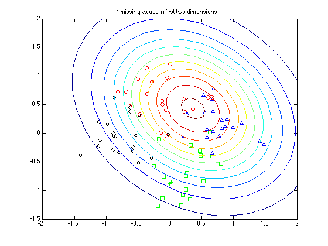
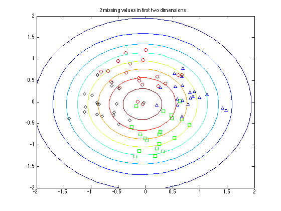

Contents
ppcamvexample.m
From A First Course in Machine Learning, Chapter 6. Simon Rogers, 01/11/11 [simon.rogers@glasgow.ac.uk] Probabilistic PCA example using Variational Bayes with missing values
clear all;close all;
Generate the data
Y = [randn(20,2);randn(20,2)+5;randn(20,2)+repmat([5 0],20,1);randn(20,2)+repmat([0 5],20,1)]; % Add 5 random dimensions N = size(Y,1); Y = [Y randn(N,5)]; % labels - just used for plotting t = [repmat(1,20,1);repmat(2,20,1);repmat(3,20,1);repmat(4,20,1)];
Plot the original data
symbs = {'ro','gs','b^','kd'};
figure(1);hold off
for k = 1:4
pos = find(t==k);
plot(Y(pos,1),Y(pos,2),symbs{k});
hold on
end

Remove some values
[N,M] = size(Y); Z = rand(N,M)<0.9; % I.e. 10 percent missing - try changing this order = randperm(N); Z(order(1),1:2) = [0 0]; % Make sure at least one has two missing in first two dimensions.
Initialise the parameters
a = 1;b = 1; % Hyper-parameters for precision e_tau = a/b; D = 2; % Number of projection dimensions e_w = randn(M,D); for m = 1:M e_wwt(:,:,m) = eye(D) + e_w(m,:)'*e_w(m,:); end tol = 1e-3; e_tau = 1;
Run the algorithm
Mean center the data (for visualisation later)
Y = Y - repmat(mean(Y,1),N,1); MaxIts = 100; for it = 1:MaxIts % Update X % Compute \Sigma_x - this is the same for all x for n = 1:N sigx(:,:,n) = inv(eye(D) + e_tau*sum(e_wwt.*repmat(reshape(Z(n,:),[1 1 M]),[D D 1]),3)); e_X(n,:) = e_tau*sigx(:,:,n)*sum(e_w.*repmat((Z(n,:).*Y(n,:)),D,1)',1)'; e_XXt(:,:,n) = sigx(:,:,n) + e_X(n,:)'*e_X(n,:); end % Update W for m = 1:M sigw(:,:,m) = inv(eye(D) + e_tau*sum(e_XXt.*repmat(reshape(Z(:,m),[1 1 N]),[D D 1]),3)); e_w(m,:) = e_tau*sigw(:,:,m)*sum(e_X.*repmat((Z(:,m).*Y(:,m)),1,D),1)'; e_wwt(:,:,m) = sigw(:,:,m) + e_w(m,:)'*e_w(m,:); end % Update tau e = a + sum(sum(Z))/2; % Compute the nasty outer expectation. Note that these two loops could % be made *much* more efficient outer_expect = 0; for n = 1:N for m = 1:M outer_expect = outer_expect + Z(n,m)*(... trace(e_wwt(:,:,m)*sigx(:,:,n)) + ... e_X(n,:)*e_wwt(:,:,m)*e_X(n,:)'); end end f = b + 0.5*sum(sum(Z.*(Y.^2))) - sum(sum(Z.*(e_X*e_w'))) + ... 0.5*outer_expect; e_tau = e/f; e_log_tau = mean(log(gamrnd(e,1/f,[1000,1]))); % Compute the bound LB = a*log(b) + (a-1)*e_log_tau - b*e_tau - gammaln(a); LB = LB - (e*log(f) + (e-1)*e_log_tau - f*e_tau - gammaln(e)); for n = 1:N LB = LB + (... -(D/2)*log(2*pi) - 0.5*(trace(sigx(:,:,n)) + e_X(n,:)*e_X(n,:)')); LB = LB - (... -(D/2)*log(2*pi) - 0.5*log(det(sigx(:,:,n))) - 0.5*D); end for m = 1:M LB = LB + (... - (D/2)*log(2*pi) - 0.5*(trace(sigw(:,:,m)) + e_w(m,:)*e_X(m,:)')); LB = LB - (... -(D/2)*log(2*pi) - 0.5*log(det(sigw(:,:,m))) - 0.5*D); end outer_expect = 0; for n = 1:N for m = 1:M outer_expect = outer_expect + Z(n,m)*(trace(e_wwt(:,:,m)*sigx(:,:,n)) + e_X(n,:)*e_wwt(:,:,m)*e_X(n,:)'); end end % likelihood bit LB = LB + (... -(N*M/2)*log(2*pi) + (N*M/2)*e_log_tau - ... 0.5*e_tau*(sum(sum(Z.*Y.^2)) - 2*sum(sum(Z.*Y.*(e_w*e_X')')) + outer_expect)); B(it) = LB; if it>2 if abs(B(it)-B(it-1))<tol break end end end
Plot the bound
figure(1);hold off plot(B); xlabel('Iterations'); ylabel('Bound');
Plot the projection
figure(1);hold off for k = 1:4 pos = find(t==k); plot(e_X(pos,1),e_X(pos,2),symbs{k}); hold on end title('Projection');

Find something with nothing missing, something with one value missing and something with two values
Uncertainty increases as more values in the first two dimensions are missing.
path(path,'../utilities'); s = sum(Z(:,1:2)==0,2); figure(1);hold off for k = 1:4 pos = find(t==k); plot(e_X(pos,1),e_X(pos,2),symbs{k}); hold on end pos = find(s==0); pos = pos(1); plot_2D_gauss(e_X(pos,:),sigx(:,:,pos),[-2:0.1:2],[-2:0.1:2]); title('No missing values'); figure(2);hold off for k = 1:4 pos = find(t==k); plot(e_X(pos,1),e_X(pos,2),symbs{k}); hold on end pos = find(s==1); pos = pos(1); plot_2D_gauss(e_X(pos,:),sigx(:,:,pos),[-2:0.1:2],[-2:0.1:2]); title('1 missing values in first two dimensions'); figure(3);hold off for k = 1:4 pos = find(t==k); plot(e_X(pos,1),e_X(pos,2),symbs{k}); hold on end pos = find(s==2); pos = pos(1); plot_2D_gauss(e_X(pos,:),sigx(:,:,pos),[-2:0.1:2],[-2:0.1:2]); title('2 missing values in first two dimensions');  